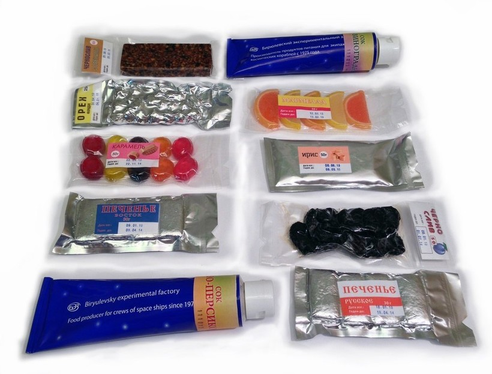

Знаете ли вы, как проживают люди на космическом корабле? Если нет, то тебе стоит прочитать это!
Здесь вы узнаете о том, как они спят, едят, моются и общаются с родными и близкими!

Как и что едят космонавты?
бородинский хлеб, сыр, ветчина, мясо с картофельным пюре, зеленые щи и борщ, свинина в кисло-сладком соусе, судак, осетрина, творог, клубника, печенье, шоколад, чай и кофе. Всё это пища,которую они едят на космическом корабле
тут просто капибара